library(plyr)
library(dplyr)
library(tm)
library(ggplot2)
library(quanteda)
library(readr)
library(seededlda)
library(slam)
library(jsonlite)
library(gplots) #this is for heatmap
library(zoo)
library(tibble)
library(knitr)
library(topicmodels)
#light<-read.csv("../data/processed/cleaned.csv")
#light<-light%>%select(-X)
mystopwords <- c("will", "must", "mr") #removing context-specific stopwords
custom_stopwords <-c(stopwords("english"), mystopwords)
# Set up the parameters
interval <- 10
breaks <- c(seq(from = 1945, to = 2020, by = 5), 2022)
last_break <- breaks[length(breaks)-1]
if (last_break + interval > 2020) {
moving_breaks <- breaks
} else {
moving_breaks <- c(breaks, last_break + interval)
}
start_years <- moving_breaks[1:14]
end_years <- start_years + interval
end_years <- end_years[1:14]
# add the final two windows
span_levels <- c(paste0(start_years, "-", end_years), "2015-2022", "2020-2022")Moving LDA Version - Inverse Weighted
Introduction
This study analyzes the global agenda of the United Nations General Debate (UNGD) and shows temporal development of the topics. Substantively, UNGDC reflects in change of agendas when exogenous shocks take place. The issue of connecting time-series evolution of topic has been addressed by others. Rieger et al. (rieger2021?) introduces a sequential approach to LDA with the accompanying package, and Greene at al. (greene2017?) uses non-negative matrix factorization to analyze the European Parliament Debate Corpus.
There are two main challenges to address cross-section time-series text dataset. First, same topic is represented with different sets of terms over time, given the social context and norms around a specific construct. Second, given changes around the topic representation, it requires theory-based post-labeling to
Goal
In order to generate LDA estimations across time more smoothly, this script changes the UNGDC_topic_modeling_updated.qmdand experiments with different moving window. Just like the other scripts, I use cleaned.csv file. It has four columns: “ccode_iso”, “session”, “year”, and finally “text”.
Experiment logs
Size of the window, and overlapping interval can influence the level of correlation between vectors. The goal of experiments with changing parameters is to capture general themes that discuss beyond a region-specific topic. Furthermore, I overcome the problem of raw term frequency that treats all terms as equally important. Inverse document frequency (idf) of a term is a weight, defined as logged value of the total number of documents in a collection denominated by the number of documents that contain the term. Intuitively, this gives less weight to terms that show up commonly across all the documents. The term frequency-inverse document frequency(tf-idf) weighting scheme returns a weight to a term that increases with the number of occurrence within a small (rieger2021?)set of documents ((manning2008?)). This supplements the explicit omission of stop words by winnowing out context-specific frequent words.
There are different options for weight type, which determines the way each term is counted. Functionally, I used quanteda package to specify this scheme option. I tried count type, which provides an integer feature of count, and proportion type that is based on the relative frequency of a term compared to total counts. Proportion type is calculated by \(\frac{tf_{ij}}{\Sigma_{j} {tf_{ij}}}\) where in \(i, j\) each represents indices for a term and a document. Given the normalization process of the proportion weight type, variation between terms is smaller than simple count type. This is expected to lessen the gap between rare and frequent terms, and hence allow model to capture even general terms. However, R package seededlda and its function topic_models does not allow tf_idf based on “proportion” as an input because LDA assumes integer counts as observations, not floats.
This version presents the outcome generated by Experiment 3. Experiment 2 log can be found in moving_lda_0218.qmd.
Setting up libraries and load raw data
LDA Generation
lda_generator <- function(corpus, span_levels, window_size, overlap, num_topics) {
# setting up parameters
window_size <- 10
overlap <- 5
num_topics <- 20
output_dir <- "../output/lda/moving_0219"
if (!dir.exists(output_dir)) {
dir.create(output_dir, recursive = TRUE)
}
start_years <- numeric(length(span_levels))
end_years <- numeric(length(span_levels))
for (i in seq_along(span_levels)) {
years <- strsplit(as.character(span_levels[i]), "-")[[1]]
start_years[i] <- as.numeric(years[1])
end_years[i] <- as.numeric(years[2])
}
for (i in seq_along(span_levels)) {
start_year_span <- start_years[i]
end_year_span <- end_years[i]
start_time <- Sys.time()
# Subset the corpus for the time window
subset <- corpus[corpus$year >= start_year_span & corpus$year <= end_year_span, ]
# Preprocess the subset
tokens <- tokens(subset$text,
remove_numbers = TRUE,
remove_punct = TRUE, # Remove punctuation
remove_symbols = TRUE, # Remove special characters
split_hyphens = TRUE) %>%
tokens_tolower() %>%
tokens_remove(pattern = custom_stopwords) %>%
tokens_wordstem()
subset_dfm <- dfm(tokens)
# Convert to TF-IDF matrix
dfm_idf <- dfm_tfidf(subset_dfm,
scheme_tf = "count",
scheme_df = "inverse")
tmod_lda <- textmodel_lda(dfm_idf, k = num_topics)
# Save LDA model
lda_output_file <- file.path(output_dir, paste0("lda_model_", start_year_span, "-", end_year_span, ".RDS"))
saveRDS(tmod_lda, lda_output_file)
# Move the window with overlap
start_year_span <- start_year_span + overlap
end_year_span <- end_year_span + overlap
end_time <- Sys.time()
elapsed_time <- end_time - start_time
cat("Elapsed time for iteration:", elapsed_time, "\n")
}
}Uncomment the below section to run the LDA analysis
#lda_generator(light, span_levels) Read in lda outputs
Given the time it takes to run the LDA models, I directly read in the outputs from a local directory.
# Define a list to store the LDA model outputs
read_lda_models <- function(span_levels, output_dir) {
lda_models <- list()
for (span in span_levels) {
lda_output_file <- file.path(output_dir, paste0("lda_model_", span, ".RDS"))
if (file.exists(lda_output_file)) {
lda_model <- readRDS(lda_output_file)
lda_models <- c(lda_models, list(lda_model))
cat(sprintf("LDA model for %s successfully loaded.\n", span))
} else {
cat(sprintf("LDA model file for %s not found.\n", span))
}
}
return(lda_models)
}# read in the LDA models
output_directory <- file.path("output/lda/moving_0219")
lda_models <- read_lda_models(span_levels, output_directory)LDA model for 1945-1955 successfully loaded.
LDA model for 1950-1960 successfully loaded.
LDA model for 1955-1965 successfully loaded.
LDA model for 1960-1970 successfully loaded.
LDA model for 1965-1975 successfully loaded.
LDA model for 1970-1980 successfully loaded.
LDA model for 1975-1985 successfully loaded.
LDA model for 1980-1990 successfully loaded.
LDA model for 1985-1995 successfully loaded.
LDA model for 1990-2000 successfully loaded.
LDA model for 1995-2005 successfully loaded.
LDA model for 2000-2010 successfully loaded.
LDA model for 2005-2015 successfully loaded.
LDA model for 2010-2020 successfully loaded.
LDA model for 2015-2022 successfully loaded.
LDA model for 2020-2022 successfully loaded.Functions for LDA Analysis
Function 1) Generating heatmaps
To visualize the correlation between term-weight vectors from two time periods, below function generates heatmaps across pairs. This process also includes intermediate steps that generate a union of term vectors, which is needed to match the dimension between two matrices. A pair of lda_models should be neighbors from two consecutive time intervals, which may vary.
- Inputs: span levels in character form, two lda_models in a list form
- Output: Heatmap plots
Function 3) Sorting top 10 terms from each term vector.
Previous steps have sorted term columns alphabetically to create correlation matrix. I re-organize each time period’s term vector in the order of weights to list the most semantically significant term within each topic.
orderBasedOnRow <- function(df, I) {
# Order columns based on the Ith row values
ordered_cols <- order(apply(df, 2, function(x) x[I]), decreasing = TRUE)
# Reorder the data frame columns
ordered_df <- df[, ordered_cols]
ordered_row <- ordered_df[I, 1:10]
return(ordered_row)
}Loop over moving windows and print results
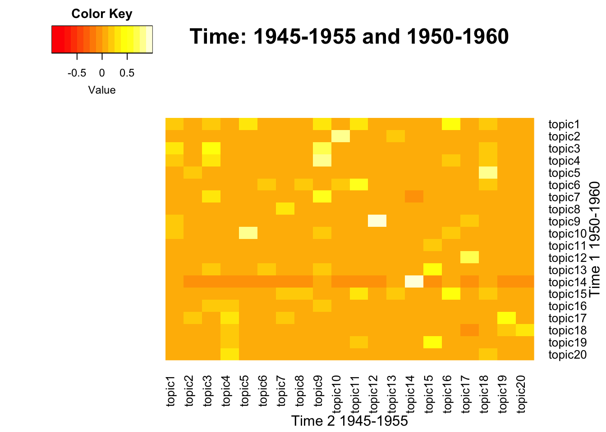
Model 1 - Topic 10
Model 2 - Topic 5
Model 1 - Topic 9
Model 2 - Topic 12
Model 1 - Topic 14
Model 2 - Topic 14
|term_1 | probability_1|term_2 | probability_2|
|:---------|-------------:|:---------|-------------:|
|communist | 0.0289820|communist | 0.0215547|
|chines | 0.0181595|chines | 0.0110215|
|china | 0.0092469|communism | 0.0083404|
|communism | 0.0087694|mainland | 0.0070955|
|soviet | 0.0065413|philippin | 0.0056592|
|mainland | 0.0065413|student | 0.0051804|
|korea | 0.0054272|china | 0.0047974|
|peip | 0.0038356|regim | 0.0043186|
|russian | 0.0036765|soviet | 0.0042228|
|imperi | 0.0033582|korea | 0.0040313|
|arab | 0.0333389|arab | 0.0299379|
|israel | 0.0293468|israel | 0.0289590|
|palestin | 0.0145852|palestin | 0.0174187|
|jerusalem | 0.0135639|refuge | 0.0098969|
|jew | 0.0107787|algeria | 0.0086089|
|refuge | 0.0086434|jewish | 0.0068057|
|jewish | 0.0082721|jew | 0.0062390|
|holi | 0.0054869|homeland | 0.0052601|
|israel’ | 0.0046513|zionist | 0.0052086|
|zionist | 0.0045585|jerusalem | 0.0051056|
|consid | 0.7466052|consid | 0.7245099|
|leader | 0.0004065|confer | 0.0003418|
|uniti | 0.0003956|disarma | 0.0003177|
|negoti | 0.0003571|communist | 0.0003116|
|aggress | 0.0003517|administr | 0.0003116|
|european | 0.0003517|atom | 0.0002935|
|armistic | 0.0003517|coexist | 0.0002935|
|europ | 0.0003462|exchang | 0.0002905|
|independ | 0.0003462|capit | 0.0002844|
|collect | 0.0003352|soviet | 0.0002814|
NULL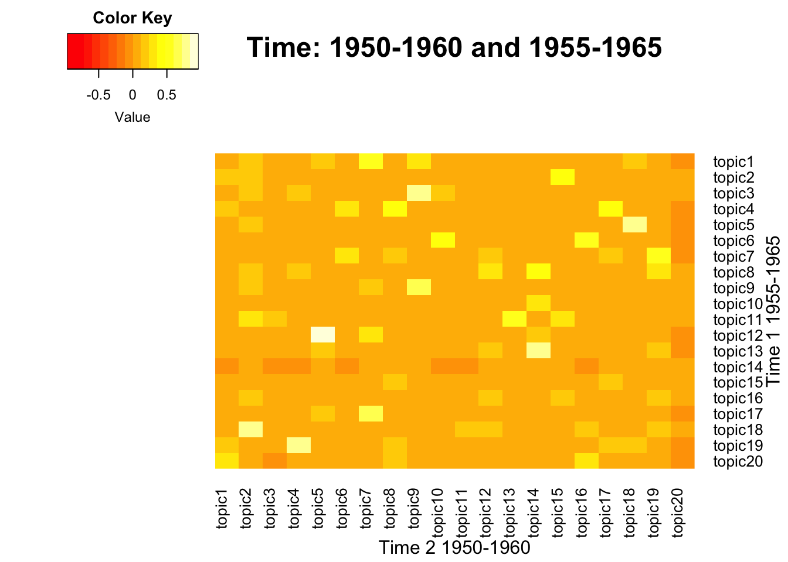
Model 1 - Topic 12
Model 2 - Topic 5
Model 1 - Topic 5
Model 2 - Topic 18
|term_1 | probability_1|term_2 | probability_2|
|:---------|-------------:|:---------|-------------:|
|arab | 0.0299379|arab | 0.0307411|
|israel | 0.0289590|israel | 0.0277034|
|palestin | 0.0174187|palestin | 0.0213481|
|refuge | 0.0098969|refuge | 0.0098767|
|algeria | 0.0086089|homeland | 0.0070388|
|jewish | 0.0068057|algeria | 0.0065191|
|jew | 0.0062390|jewish | 0.0061994|
|homeland | 0.0052601|yemen | 0.0055599|
|zionist | 0.0052086|jew | 0.0054000|
|jerusalem | 0.0051056|zionist | 0.0053600|
|communist | 0.0215547|communist | 0.0270704|
|chines | 0.0110215|chines | 0.0126990|
|communism | 0.0083404|communism | 0.0087489|
|mainland | 0.0070955|mainland | 0.0087489|
|philippin | 0.0056592|costa | 0.0078244|
|student | 0.0051804|liberian | 0.0072361|
|china | 0.0047974|rica | 0.0068159|
|regim | 0.0043186|mao | 0.0045468|
|soviet | 0.0042228|revolut | 0.0043787|
|korea | 0.0040313|soviet | 0.0041265|
NULL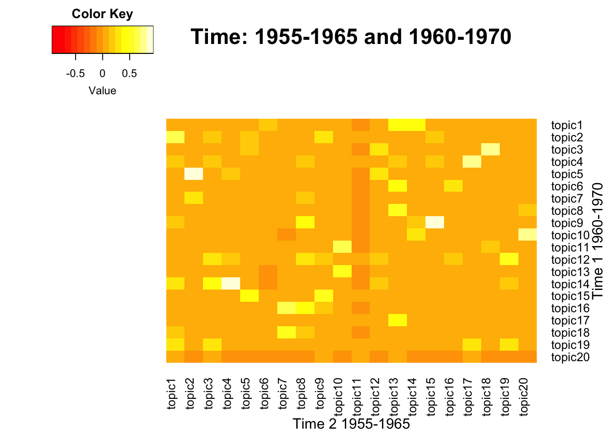
Model 1 - Topic 5
Model 2 - Topic 2
Model 1 - Topic 14
Model 2 - Topic 4
Model 1 - Topic 9
Model 2 - Topic 15
Model 1 - Topic 4
Model 2 - Topic 17
|term_1 | probability_1|term_2 | probability_2|
|:-------------|-------------:|:-------------|-------------:|
|arab | 0.0307411|israel | 0.0381597|
|israel | 0.0277034|arab | 0.0332029|
|palestin | 0.0213481|palestin | 0.0211142|
|refuge | 0.0098767|isra | 0.0131264|
|homeland | 0.0070388|zionist | 0.0113791|
|algeria | 0.0065191|palestinian | 0.0095604|
|jewish | 0.0061994|israel’ | 0.0093108|
|yemen | 0.0055599|jordan | 0.0077061|
|jew | 0.0054000|jewish | 0.0070999|
|zionist | 0.0053600|jerusalem | 0.0060301|
|algerian | 0.0162806|algerian | 0.0192061|
|libya | 0.0119346|algeria | 0.0121188|
|libyan | 0.0114659|libya | 0.0116664|
|african | 0.0103581|malagasi | 0.0092035|
|french | 0.0084407|french | 0.0077960|
|algeria | 0.0079294|libyan | 0.0074945|
|malagasi | 0.0078442|franc | 0.0069415|
|franc | 0.0075033|morocco | 0.0063886|
|congo | 0.0069494|madagascar | 0.0063384|
|tunisian | 0.0054155|tunisia | 0.0062881|
|german | 0.0189856|german | 0.0195757|
|socialist | 0.0134455|socialist | 0.0137569|
|czechoslovak | 0.0112187|byelorussian | 0.0125336|
|soviet | 0.0104583|soviet | 0.0123352|
|germani | 0.0097250|ukrainian | 0.0112442|
|byelorussian | 0.0096978|czechoslovak | 0.0109466|
|nato | 0.0081770|germani | 0.0107813|
|western | 0.0071451|western | 0.0092275|
|republ | 0.0067377|nato | 0.0081695|
|ukrainian | 0.0065476|ssr | 0.0081364|
|cuba | 0.0223649|cuba | 0.0255165|
|cuban | 0.0191781|cuban | 0.0204357|
|imperialist | 0.0065877|bantu | 0.0148735|
|belgian | 0.0062221|yanke | 0.0085091|
|revolutionari | 0.0056474|puerto | 0.0059419|
|imperi | 0.0050727|revolutionari | 0.0055675|
|volta | 0.0043936|rico | 0.0046583|
|congoles | 0.0042891|sugar | 0.0045514|
|revolut | 0.0042368|oa | 0.0043374|
|aircraft | 0.0042368|aircraft | 0.0042305|
NULL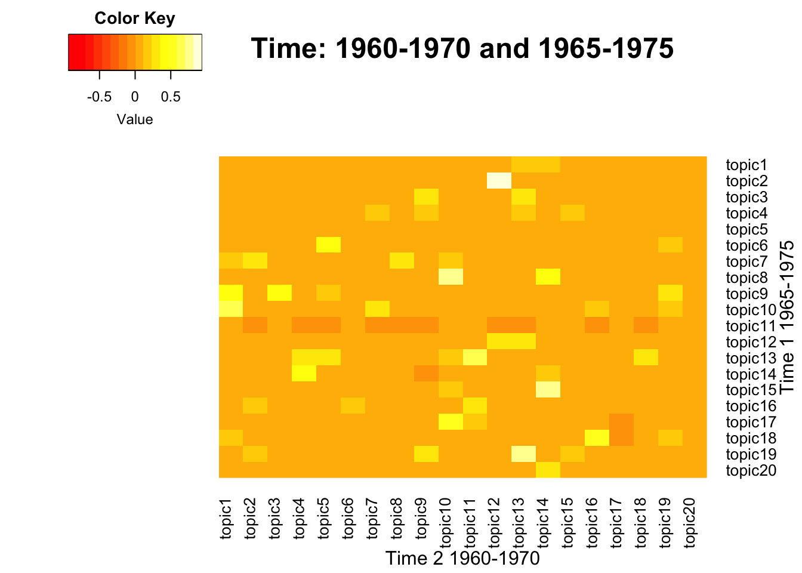
Model 1 - Topic 2
Model 2 - Topic 12
|term_1 | probability_1|term_2 | probability_2|
|:-----------|-------------:|:-----------|-------------:|
|israel | 0.0381597|israel | 0.0230815|
|arab | 0.0332029|arab | 0.0206201|
|palestin | 0.0211142|palestin | 0.0142681|
|isra | 0.0131264|isra | 0.0130771|
|zionist | 0.0113791|zionist | 0.0100070|
|palestinian | 0.0095604|palestinian | 0.0082338|
|israel’ | 0.0093108|yemen | 0.0075986|
|jordan | 0.0077061|israel’ | 0.0072810|
|jewish | 0.0070999|aggress | 0.0072280|
|jerusalem | 0.0060301|jewish | 0.0065664|
NULL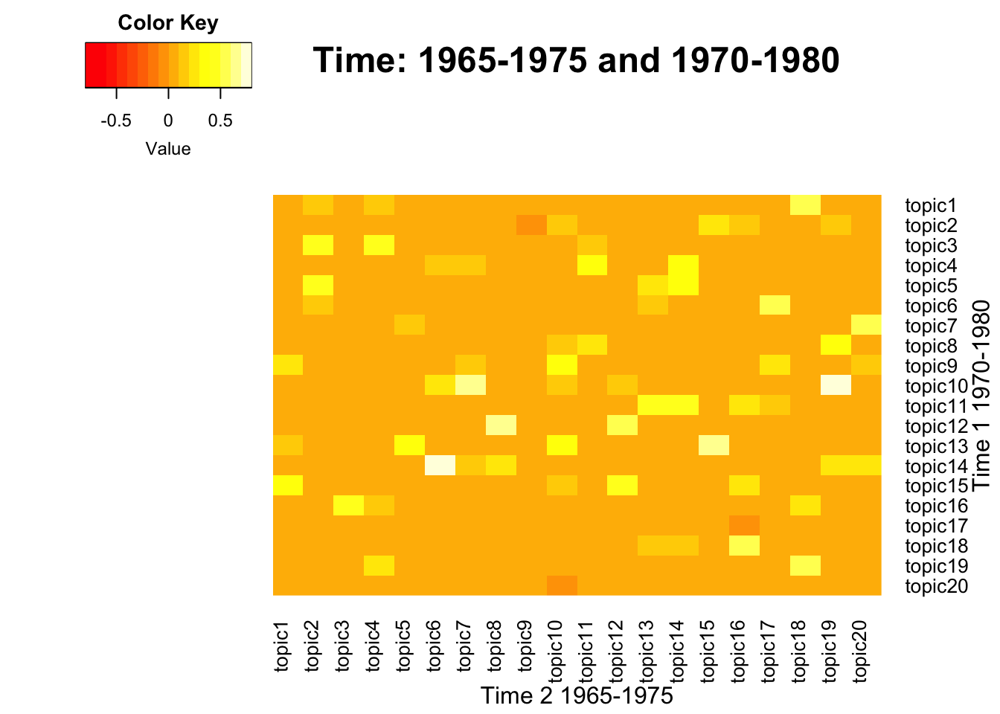
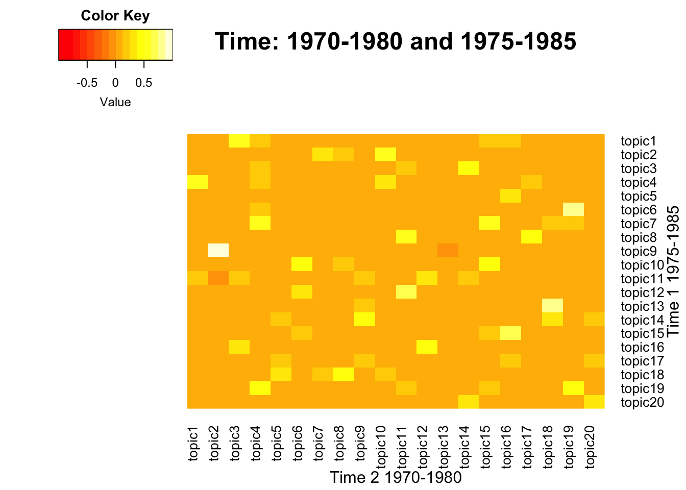
Model 1 - Topic 9
Model 2 - Topic 2
Model 1 - Topic 13
Model 2 - Topic 18
Model 1 - Topic 6
Model 2 - Topic 19
|term_1 | probability_1|term_2 | probability_2|
|:------------|-------------:|:-----------|-------------:|
|presid | 0.6960234|presid | 0.6953641|
|align | 0.0004581|cooper | 0.0005507|
|dialog | 0.0003453|dialog | 0.0004569|
|women | 0.0003279|program | 0.0004545|
|twenti | 0.0003238|fortieth | 0.0003800|
|ocean | 0.0002943|ocean | 0.0003367|
|cooper | 0.0002929|indian | 0.0003355|
|dialogu | 0.0002849|sea | 0.0003199|
|vis | 0.0002647|programm | 0.0003115|
|favor | 0.0002594|per | 0.0003030|
|panama | 0.0246931|panama | 0.0176549|
|rica | 0.0113690|rica | 0.0122595|
|costa | 0.0102805|costa | 0.0121929|
|hondura | 0.0091483|hondura | 0.0118931|
|venezuela | 0.0082775|canal | 0.0113270|
|canal | 0.0081904|american | 0.0089290|
|nicaragua | 0.0080598|salvador | 0.0085627|
|salvador | 0.0068406|nicaragua | 0.0085294|
|panamanian | 0.0065793|panamanian | 0.0078633|
|surinam | 0.0064487|el | 0.0072305|
|soviet | 0.0141930|soviet | 0.0175825|
|socialist | 0.0122397|socialist | 0.0113552|
|mongolian | 0.0113492|union | 0.0107932|
|austria | 0.0089363|mongolian | 0.0094668|
|union | 0.0084193|german | 0.0088373|
|ssr | 0.0081033|europ | 0.0087025|
|byelorussian | 0.0075575|poland | 0.0080505|
|german | 0.0075288|albania | 0.0074435|
|hungarian | 0.0069543|imperialist | 0.0074210|
|bulgaria | 0.0064373|albanian | 0.0059598|
NULL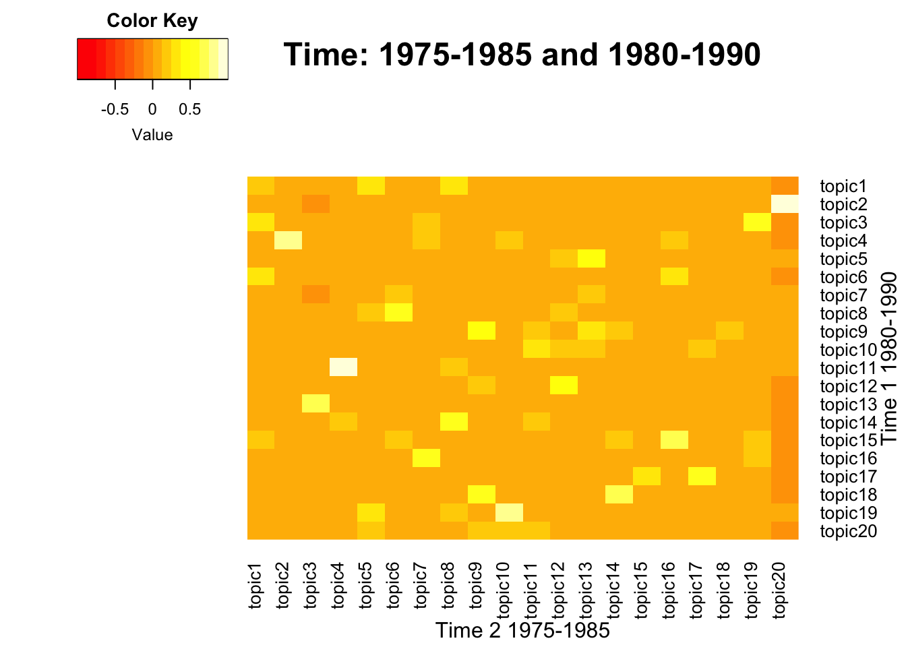
Model 1 - Topic 4
Model 2 - Topic 2
Model 1 - Topic 11
Model 2 - Topic 4
Model 1 - Topic 19
Model 2 - Topic 10
Model 1 - Topic 2
Model 2 - Topic 20
|term_1 | probability_1|term_2 | probability_2|
|:-----------|-------------:|:----------|-------------:|
|kampuchea | 0.0137280|viet | 0.0220493|
|vietnames | 0.0128502|nam | 0.0219741|
|lao | 0.0127438|vietnames | 0.0192654|
|thailand | 0.0126374|thailand | 0.0182497|
|chines | 0.0114138|lao | 0.0168201|
|ethiopia | 0.0098711|kampuchean | 0.0142619|
|viet | 0.0093657|chines | 0.0139986|
|kampuchean | 0.0091795|china | 0.0134719|
|nam | 0.0089667|kampuchea | 0.0114780|
|china | 0.0086741|thai | 0.0107256|
|zionist | 0.0139458|arab | 0.0143440|
|arab | 0.0098636|egypt | 0.0106638|
|egypt | 0.0085357|israel | 0.0090574|
|yemen | 0.0078717|lebanes | 0.0090282|
|isra | 0.0069372|isra | 0.0083272|
|entiti | 0.0064208|zionist | 0.0081811|
|lebanes | 0.0062733|jordan | 0.0067792|
|libyan | 0.0061995|islam | 0.0066039|
|sudan | 0.0058306|lebanon | 0.0063118|
|jordan | 0.0057568|entiti | 0.0062242|
|soviet | 0.0175825|socialist | 0.0125423|
|socialist | 0.0113552|romania | 0.0122521|
|union | 0.0107932|mongolian | 0.0103363|
|mongolian | 0.0094668|ukrainian | 0.0092624|
|german | 0.0088373|soviet | 0.0091753|
|europ | 0.0087025|ssr | 0.0084496|
|poland | 0.0080505|space | 0.0073466|
|albania | 0.0074435|bulgaria | 0.0072885|
|imperialist | 0.0074210|hungarian | 0.0067951|
|albanian | 0.0059598|europ | 0.0064758|
|presid | 0.6953641|presid | 0.7503569|
|cooper | 0.0005507|dialog | 0.0005581|
|dialog | 0.0004569|program | 0.0004706|
|program | 0.0004545|fortieth | 0.0003729|
|fortieth | 0.0003800|align | 0.0003627|
|ocean | 0.0003367|ocean | 0.0002984|
|indian | 0.0003355|center | 0.0002701|
|sea | 0.0003199|neighbor | 0.0002495|
|programm | 0.0003115|dialogu | 0.0002482|
|per | 0.0003030|spend | 0.0002431|
NULL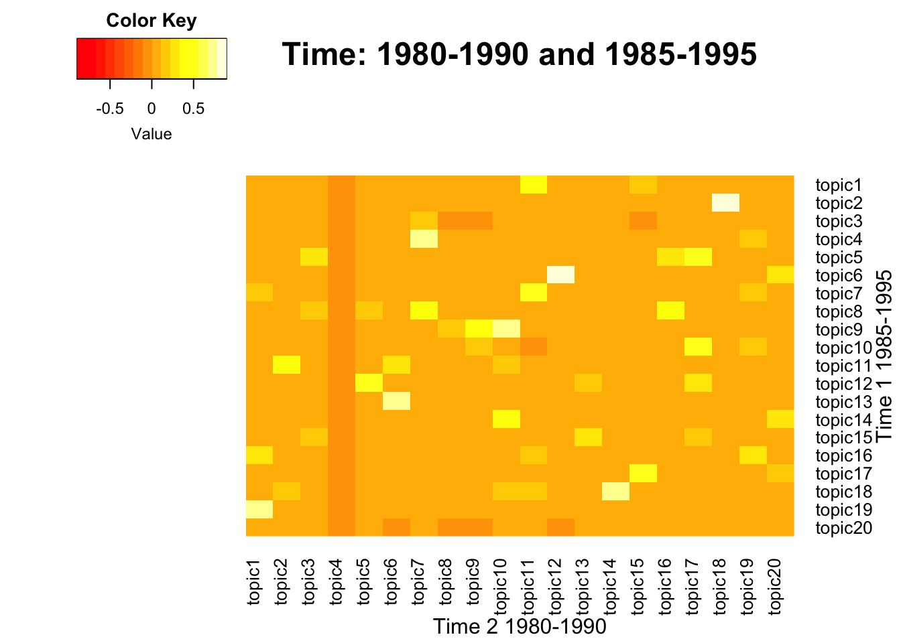
Model 1 - Topic 6
Model 2 - Topic 12
Model 1 - Topic 2
Model 2 - Topic 18
|term_1 | probability_1|term_2 | probability_2|
|:----------|-------------:|:---------|-------------:|
|guinea | 0.0426157|guinea | 0.0531918|
|pacif | 0.0269901|papua | 0.0277031|
|papua | 0.0244836|franc | 0.0266996|
|zealand | 0.0218172|solomon | 0.0258299|
|caledonia | 0.0211772|equatori | 0.0248264|
|franc | 0.0170708|pacif | 0.0247595|
|fee | 0.0148310|caledonia | 0.0227525|
|solomon | 0.0113112|tunisia | 0.0200096|
|island | 0.0094980|fee | 0.0190061|
|fiji | 0.0092847|french | 0.0127176|
|viet | 0.0220493|viet | 0.0299134|
|nam | 0.0219741|nam | 0.0286715|
|vietnames | 0.0192654|vietnames | 0.0201855|
|thailand | 0.0182497|cambodia | 0.0158389|
|lao | 0.0168201|thailand | 0.0153732|
|kampuchean | 0.0142619|lao | 0.0147523|
|chines | 0.0139986|asean | 0.0146488|
|china | 0.0134719|cambodian | 0.0136657|
|kampuchea | 0.0114780|kampuchea | 0.0129930|
|thai | 0.0107256|china | 0.0121651|
NULL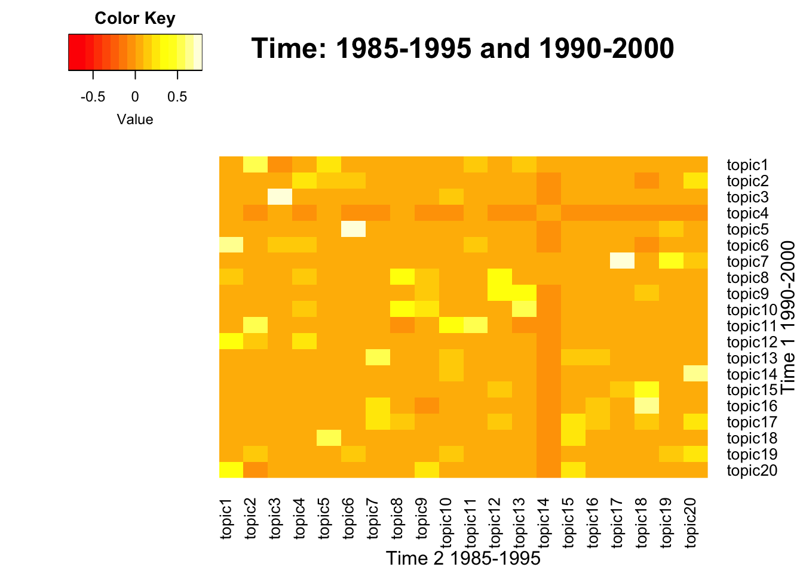
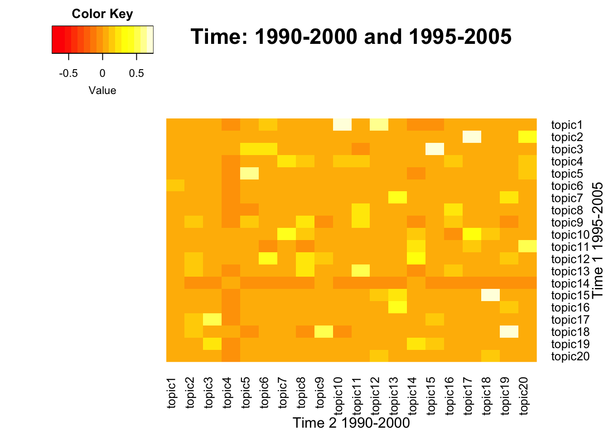
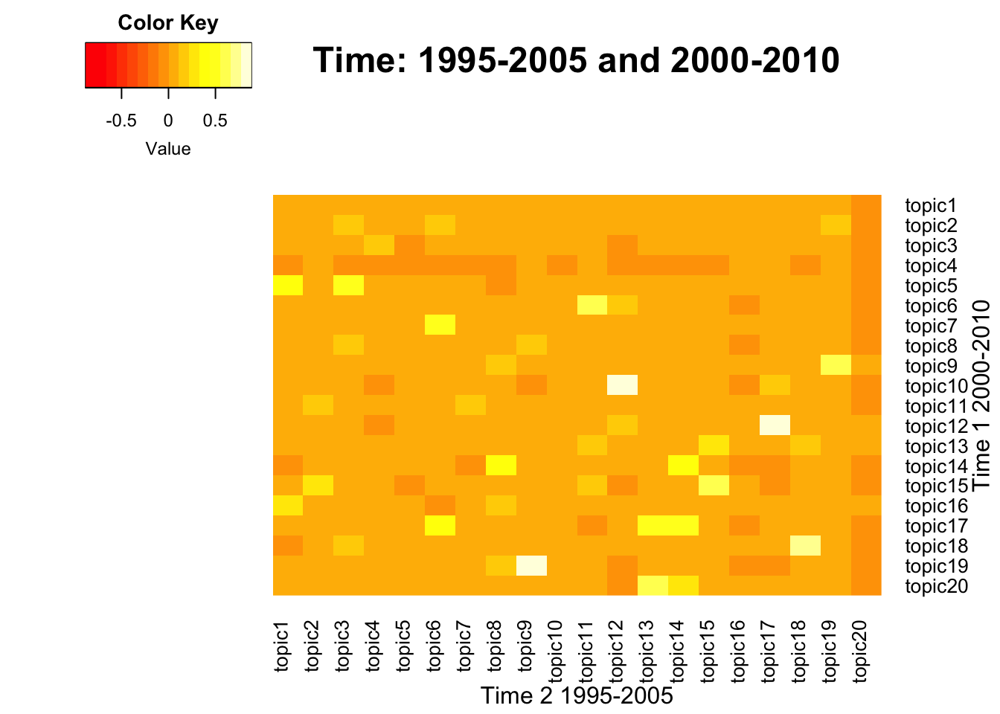
Model 1 - Topic 10
Model 2 - Topic 12
Model 1 - Topic 12
Model 2 - Topic 17
|term_1 | probability_1|term_2 | probability_2|
|:---------|-------------:|:---------|-------------:|
|caribbean | 0.0242875|caribbean | 0.0212905|
|saint | 0.0192474|saint | 0.0186563|
|bahama | 0.0160401|bahama | 0.0175884|
|haiti | 0.0118812|trinidad | 0.0150254|
|barbado | 0.0117050|haiti | 0.0147762|
|grenada | 0.0112468|tobago | 0.0144203|
|lucia | 0.0098722|grenada | 0.0142067|
|dominica | 0.0090263|barbado | 0.0113233|
|banana | 0.0088501|lucia | 0.0108606|
|nevi | 0.0086739|dominica | 0.0085824|
|island | 0.0332753|island | 0.0381171|
|pacif | 0.0224835|pacif | 0.0266393|
|papua | 0.0172557|fiji | 0.0207365|
|malawi | 0.0171436|solomon | 0.0200806|
|solomon | 0.0161728|papua | 0.0157446|
|fiji | 0.0153139|nauru | 0.0141778|
|vanuatu | 0.0110943|tuvalu | 0.0119551|
|marshal | 0.0109822|palau | 0.0117000|
|zealand | 0.0109449|vanuatu | 0.0111535|
|australia | 0.0101234|marshal | 0.0104976|
NULL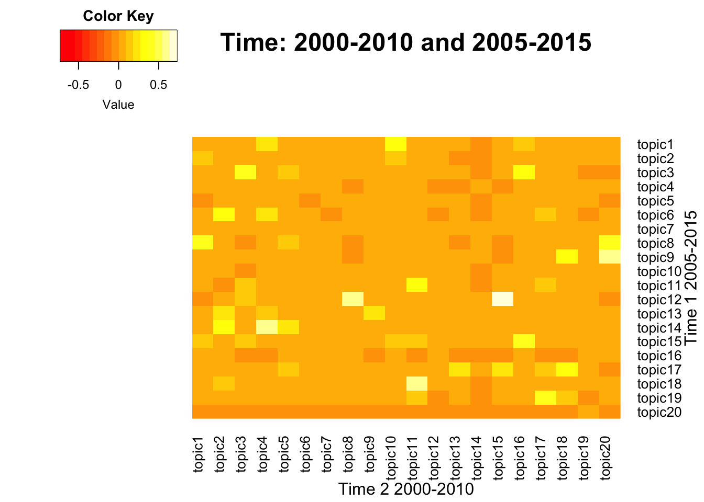
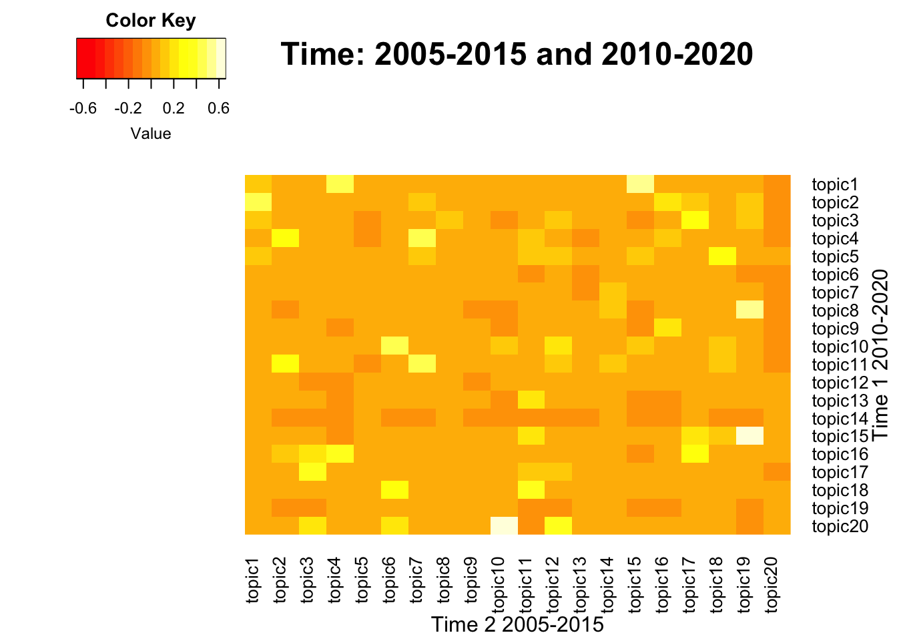
Model 1 - Topic 19
Model 2 - Topic 4
Model 1 - Topic 11
Model 2 - Topic 13
Model 1 - Topic 16
Model 2 - Topic 20
|term_1 | probability_1|term_2 | probability_2|
|:---------|-------------:|:----------|-------------:|
|saint | 0.0157054|saint | 0.0166049|
|caribbean | 0.0150852|caribbean | 0.0160530|
|bahama | 0.0150570|bahama | 0.0126139|
|grenada | 0.0122943|madagascar | 0.0123592|
|sid | 0.0114767|grenada | 0.0120195|
|barbado | 0.0114203|guyana | 0.0117223|
|island | 0.0087703|dominica | 0.0104911|
|dominica | 0.0087422|island | 0.0101090|
|botswana | 0.0086576|lucia | 0.0101090|
|lucia | 0.0079528|jamaica | 0.0100241|
|island | 0.0255438|pacif | 0.0249485|
|pacif | 0.0233716|island | 0.0244274|
|ocean | 0.0174045|ocean | 0.0197719|
|solomon | 0.0172298|solomon | 0.0181390|
|sid | 0.0122363|papua | 0.0120938|
|papua | 0.0109131|sri | 0.0119896|
|tuvalu | 0.0108382|sid | 0.0108084|
|sri | 0.0106884|australia | 0.0100788|
|mauritius | 0.0105386|micronesia | 0.0095924|
|australia | 0.0099144|lanka | 0.0094881|
|african | 0.0191619|african | 0.0164538|
|guinea | 0.0187588|chad | 0.0138434|
|sahel | 0.0144187|mali | 0.0137191|
|mali | 0.0144187|guinea | 0.0135948|
|chad | 0.0117526|sahel | 0.0130975|
|congo | 0.0111945|burkina | 0.0095756|
|bissau | 0.0106055|niger | 0.0092855|
|burkina | 0.0102955|faso | 0.0088712|
|faso | 0.0097375|africa | 0.0083325|
|niger | 0.0088074|g | 0.0080425|
NULL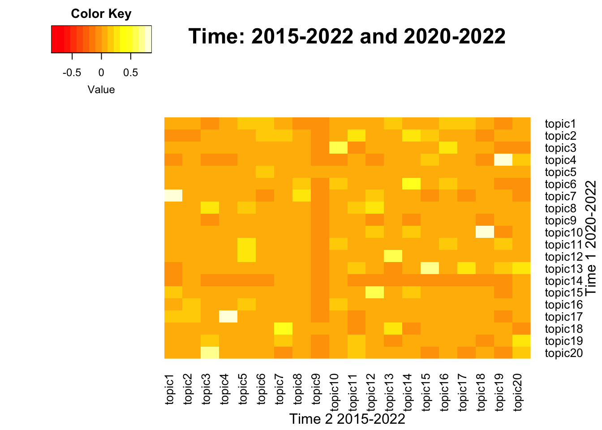
Model 1 - Topic 17
Model 2 - Topic 4
Model 1 - Topic 10
Model 2 - Topic 18
|term_1 | probability_1|term_2 | probability_2|
|:-----------|-------------:|:-----------|-------------:|
|ukrain | 0.0215762|ukrain | 0.0227151|
|ireland | 0.0138354|russia | 0.0158697|
|russian | 0.0137175|russian | 0.0116957|
|russia | 0.0136782|belarus | 0.0092747|
|marino | 0.0109276|latvia | 0.0086904|
|latvia | 0.0097881|aggress | 0.0085234|
|ukrainian | 0.0094344|moldova | 0.0079390|
|poland | 0.0084521|poland | 0.0071877|
|belarus | 0.0080592|ukrainian | 0.0071877|
|san | 0.0075876|war | 0.0071042|
|azerbaijan | 0.0599473|azerbaijan | 0.0637342|
|armenia | 0.0558605|armenia | 0.0634100|
|sudan | 0.0319008|azerbaijani | 0.0155809|
|viet | 0.0209226|armenian | 0.0146081|
|nam | 0.0194001|iraq | 0.0115276|
|armenian | 0.0182783|azerbaijan’ | 0.0100684|
|azerbaijani | 0.0136306|zealand | 0.0099063|
|karabakh | 0.0115471|karabakh | 0.0090956|
|nagorno | 0.0101849|nagorno | 0.0073122|
|south | 0.0088226|iraqi | 0.0069879|
NULL